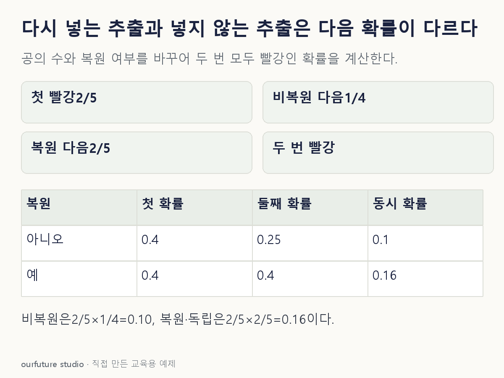

조건을 바꾸며 확인하기
균등 추출과 충분한 섞기, 복원 시행의 독립성을 가정한다. 첫 빨강이 불가능하면 그 조건의 두 번째 확률은 null로 남긴다.
설명 그림과 비교하기
아래 그림과 표는 고정된 설명 예제입니다. 기본·변형 중 어떤 조건인지 캡션을 읽고, 바꾼 입력의 결과는 계산 칸에서 확인하세요.

같은 문제를 직접 골라 보기
빨강 2개·파랑 3개에서 두 개를 균등하게 비복원 추출한다.
조건을 더 바꾸면?
매번 공을 되돌리고 충분히 섞어 독립 추출한다면 두 번 모두 빨강일 확률은?
변형 풀이 확인
0.16
각 시행에서 빨강 확률이 2/5로 유지되므로 (2/5)×(2/5)=0.16이다.
첫 번째를 뽑은 뒤 주머니에 무엇이 남는지 적는다.